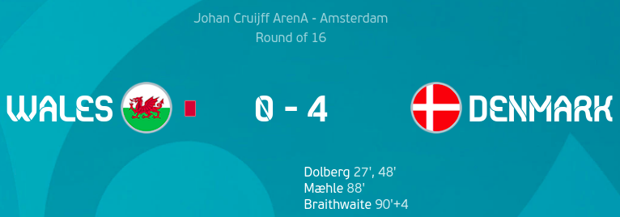

Day 16
Wales v Denmark

Denmark were absolutely brilliant in this game. They will now be facing either Netherlands or Czech Republic. Kasper Dolberg was amazing in the absence of Poulsen and scored a great brace in what is his stadium when playing for Ajax. Wales did look threatening in a the first 10-12 minutes but could not finish their chances. Dolberg first scored with a great curler from outside the box. Later he scored again after a shambolic clearance from the substitute Willams who came on after Roberts pulled his groin. Later Maehle scored after an amazing first touch. Finally Braithwaite scored after having a great game.
Italy v Austria
Italy required Chiesa and extra time to beat Austria. This was utterly uncharacteristic of Italy after they could not put away the countless chances they had. Austria almost thought they got the winner in normal time when Arnautovic scored from a looping header from Alaba but it was ruled out due to offside. Moving into extra time, Chiesa made an impact yet again when he scored. Something the entire Italian team could not do in 90 minutes. Later Pessina made it 2 after a great move and although Austria did pull one back later in the second half of extra time it was not enough. The streak of the Italians also came to an end of not conceding for so long.